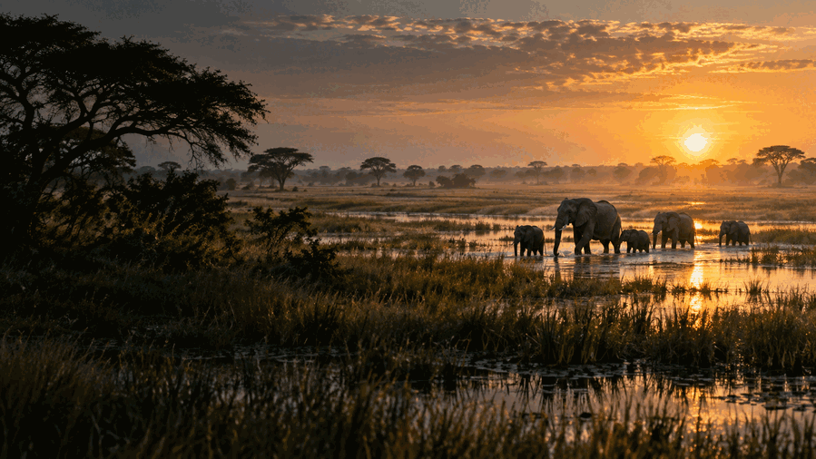

Days 1–3
Northern Tuli, Botswana
Riverlands, photographic hides, cycling, walking and horseback safaris.
3 days · Arrival
One continent. A thousand journeys.
Build a safari across regions, landscapes and cultures, then connect with verified African operators.
Botswana route · expanded
Riverlands, photographic hides, cycling, walking and horseback safaris.
3 days · ArrivalCommunity concessions, floodplains, mokoro channels and predator country.
3 days · Road or air transferBoating, birding, tiger fishing and access to Tsodilo Hills.
2 days · Road or air transferElephant corridors, private concessions and exceptional predator viewing.
2 days · Road or air transferDesert wildlife, San culture and immense night skies.
2 days · Road or air transferThis is a planning route, not a fixed package. A local specialist can refine seasons, transfers and availability before you commit.
Your next journey
Africa, region by region
First complete country model
Explore safari regions, protected areas, private concessions, camps, lodges and specialist experiences—from the Limpopo in Tuli to the Okavango Panhandle and the Kalahari.
Catalogue entries are discovery records, not an operating-status guarantee. Licensing, availability, access and current trading status must be verified before booking.
Migration country, mountain forests, Indian Ocean shores and classic open savanna.
Kenya · Tanzania · Uganda · Rwanda · EthiopiaDelta waterways, great rivers, desert roads and some of the continent’s most varied safari styles.
Botswana · Namibia · South Africa · Zambia · ZimbabweAtlas routes, Saharan landscapes, ancient cities and Red Sea journeys.
Morocco · Egypt · TunisiaLiving heritage, Atlantic coastlines, forests, music and community-led journeys.
Ghana · Senegal · The Gambia · Côte d’IvoireRainforest expeditions, rare primates and remote conservation landscapes.
Rwanda · Cameroon · Gabon · Republic of the CongoEndemic wildlife, tropical forests, reefs and island cultures unlike anywhere else.
Madagascar · Mauritius · SeychellesContinental destination atlas
The atlas is designed for continuing verification and expansion. Local access rules, operating seasons and safety conditions must be confirmed before travel.
Pocket field guide
Designed for offline use in the field. Detailed species content will be verified before commercial launch.
Africa in your pocket
The live map needs a connection. Destination guides and map areas you have already viewed remain available when cached on your device.
Reconnect to load the geographic map. Your destination list and saved guide packs are still available.
Selected destination
Morocco · Culture & mountains
Planning map only. Do not use it for turn-by-turn navigation, emergency routing or park-boundary decisions.
Offline guide packs